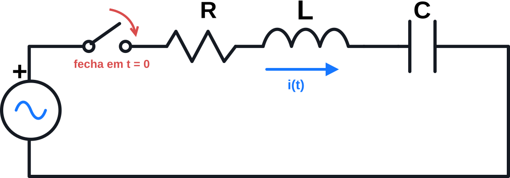

Laboratório de transitórios • RLC série
Feche a chave em t = 0 e explore como a energia armazenada e o amortecimento moldam a resposta.

Circuito RLC série: fechamento da chave em t = 0.
e(t) = Eₘ cos(2πft + θ), t ≥ 0
Fonte → chave → R → L → C → retorno. Corrente positiva entrando no terminal positivo do capacitor.